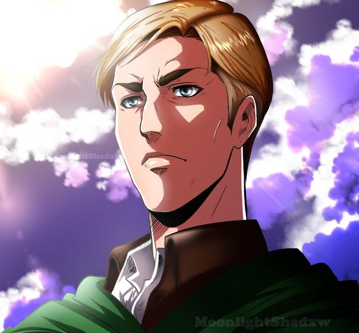

FreeCodeCamp Project

fig-caption
Erwin Smith
Everything I have done, I did thinking that this day would come.
That someday... I would be able to check my answers.
Erwin Smith was the 13th commander of the Survey Corps. Discerning, intelligent, and widely respected, Erwin was an able commander. While he cared deeply for his men, he did not hesitate to sacrifice them for the good and prosperity of mankind, and his men proved more than willing to stake their lives at his order. During Erwin's career he developed the Long-Distance Enemy Scouting Formation, and due to uncertainty about his future, he later named Hange Zoë as his successor.
READ MORE ABOUT HIM